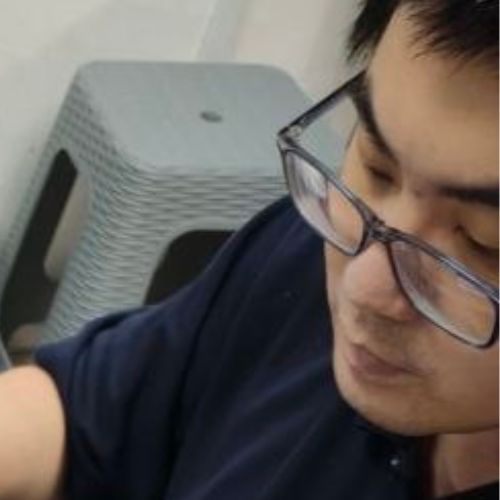

Casual TCG player who enjoys learning decks through play, building memories from card pulls and events, and sharing the journey with friends.
I’m not a deck builder — I’m a deck learner. I start from existing lists, understand how they work, and improve through each game I play.
I enjoy TCG for the experience — the matches, the cards, and the moments that stay with me.
Yi Tong / YT / イートン
Learn by playing, adapting through experience, and improving over time.
I do not see myself as a deck builder first. I am more of a player who learns by picking up a deck list, understanding its game plan, and improving through actual play.
I usually start from an existing deck list, then slowly learn the combos, game plan, and matchup decisions through actual games.
As long as I understand how the deck works, I can adjust my decisions and slowly make the deck feel natural to play.
A big part of TCG for me is not only competition, but also the memories from events, card pulls, and personal milestones.
I enjoy playing TCG a lot, and that enjoyment is what keeps me exploring more decks, more games, and more experiences.
My journey across different card games shaped how I learn decks, adapt to mechanics, and enjoy TCG as both a casual and growing player.
This was where I first started playing TCG. I joined some casual events and mostly played with friends. From there, I slowly explored different card games over time, always staying as a casual player and just enjoying the experience.
I started playing Weiss Schwarz and learned a different style of card game pacing, resource handling, and deck identity.
I explored WIXOSS during this period, adding more variety to my TCG experience and understanding of game mechanics.
I returned to Weiss Schwarz and spent several years deepening my familiarity with decks, matchups, and decision-making.
I picked up One Piece Card Game and began learning a new game flow, deck structure, and matchup style.
I started playing Gundam and it quickly became one of my current main active card games.
I started Union Arena and it is now one of the games I am currently most active in.
This section works like a memory wall. You can later replace each placeholder with your own card photo, event photo, or achievement image.
I was shocked when I opened one of the highest rarity cards. It was one of those moments that felt too lucky to be real, and it became one of my favorite TCG memories.
Winning a shop event felt meaningful because it showed that my learning and practice were turning into real results, even as a casual player.
Reaching Top 8 was a memorable milestone for me. It gave me confidence and reminded me that every game and every bit of experience matters.
Getting my first Newtype Challenge win was a special moment. It is one of the achievements I will always remember in my TCG journey.